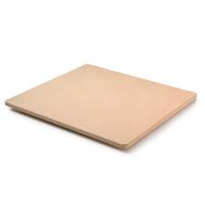
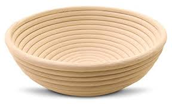
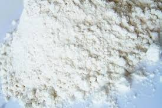
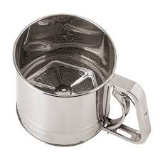
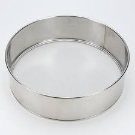

What is a baking stone? A baking stone is a thick ceramic plate. Baking stones better distribute heat to bread as it bakes.
This allows for an even bake and an improved crust.

This is what a baking stone looks like
How is this different from a bread baker? A bread baker is an enclosed baking stone.
Because the bread is in an enclosed, evenly heated space the bread is given a better bake.
Also, it's an oven inside an oven.
What is a proofing bowl? A proofing bowl is a bowl that you put your bread dough into.
Over time the dough will expand, because of science. The bowl holds the dough while it proofs.
That's it.

This is what a proofing bowl looks like
Is there anything special about a proofing bowl? One. You can be reasonably assured that the last thing in the proofing bowl was bread dough.
I mean look at that thing. It looks like it came out of a museum. When your kid comes upon that bowl, they wont try to eat cereal out of it.
Because that bowl is fancy. That's got to be worth something.
What is a flour sifter? When stored, flour tends to form into clumps.
A flour sifter catches these clumps before they end up in the dough.
The caught clumps are then broken up so they can pass through the sifter.

This is just plain lazy
So it's a sieve? Yup. Just like if you were panning for gold. Or cleaning a litter box. There are two variants.

This sifter operates like a fertalizer spreader

This is also a sifter